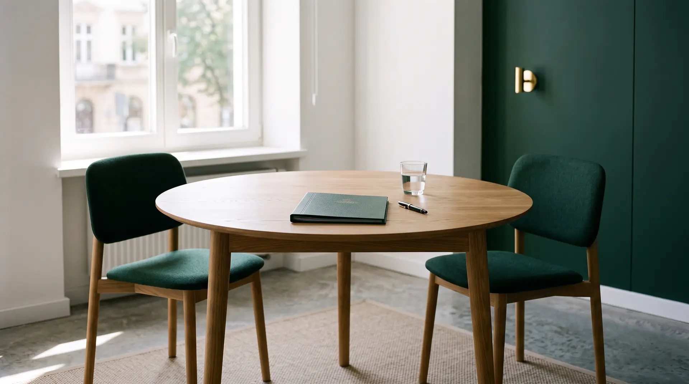

Kancelaria Adwokacka Marcin Malinowski · adwokat w Mińsku Mazowieckim
Spór można zakończyć w sądzie.Albo przy stole.
Reprezentujemy klientów przed sądami i urzędami, a tam, gdzie to możliwe, pomagamy dojść do porozumienia — szybciej i z mniejszym kosztem niż w procesie.
Dwie drogi. Wybieramy razem.
Na pierwszej rozmowie ustalamy, co się Panu lub Pani bardziej opłaca: porozumienie czy proces. Czasem jedno prowadzi do drugiego.
Porozumienie
mediacja i negocjacje
Gdy zależy Państwu na czasie, kosztach i relacji — rodzinnej, sąsiedzkiej albo zawodowej.
- sprawy cywilne, np. podział majątku
- sprawy rodzinne: alimenty, opieka nad dziećmi
- sprawy karne i sprawy nieletnich
- prawo pracy, np. rekompensata po wypadku w pracy
- negocjacje: rozwody, podział majątku, spory z deweloperami, rozmowy z prokuraturą
Proces
reprezentacja przed sądem i urzędem
Gdy porozumienie nie jest możliwe albo sprawa wymaga rozstrzygnięcia sądu.
- obrona i reprezentacja w sprawach karnych, także pokrzywdzonych
- pełnomocnik w sprawach cywilnych, rodzinnych, spadkowych i pracowniczych
- sądy powszechne i administracyjne, Sąd Najwyższy, NSA
- pisma procesowe, apelacje, skargi i odwołania
Dziedziny prawa
Prawo karne
Obrona na każdym etapie sprawy i reprezentacja pokrzywdzonych.
- obrona w postępowaniu przygotowawczym i przed sądem
- reprezentacja pokrzywdzonych jako oskarżyciela posiłkowego lub prywatnego
- jazda po alkoholu lub pod wpływem środka odurzającego, odzyskanie prawa jazdy
- apelacje, zażalenia, kasacje, wnioski o wznowienie postępowania
- warunkowe umorzenie, przedterminowe zwolnienie, zatarcie skazania
- sprawy nieletnich i sprawy o wykroczenia
Prawo cywilne
Zapłata, odszkodowania, nieruchomości i umowy.
- procesy o zapłatę, odszkodowanie i zadośćuczynienie
- naruszenie dóbr osobistych
- zasiedzenie, służebność drogi i przesyłu, zniesienie współwłasności, rozgraniczenie
- eksmisja, spory z najmu, wydanie rzeczy
- sporządzanie i analiza umów, wezwania do zapłaty, wypowiedzenia
- postępowanie egzekucyjne i zabezpieczające
Prawo rodzinne i opiekuńcze
Rozwód, alimenty i sprawy dzieci — z troską o to, co zostanie po wyroku.
- rozwód i separacja
- alimenty
- władza rodzicielska, kontakty z dzieckiem, miejsce pobytu dziecka
- rozdzielność majątkowa i podział majątku wspólnego
- ustalenie i zaprzeczenie ojcostwa
Prawo spadkowe
Nabycie i dział spadku, zachowek, odrzucenie spadku.
- stwierdzenie nabycia spadku
- dział spadku
- przyjęcie lub odrzucenie spadku
- roszczenia o zachowek
- wyjawienie przedmiotów spadkowych
Prawo pracy i ubezpieczeń
Po stronie pracownika i pracodawcy, także wobec ZUS.
- wynagrodzenie, nadgodziny, ekwiwalent za urlop
- przywrócenie do pracy lub odszkodowanie za rozwiązanie umowy
- mobbing
- wypadki przy pracy i choroby zawodowe
- odwołania od decyzji organów rentowych
- sprostowanie świadectwa pracy
Prawo administracyjne
Odwołania i skargi na decyzje urzędów.
- odwołania od decyzji administracyjnych
- skargi do sądów administracyjnych
- wnioski i pisma do urzędów i samorządu
Jak wygląda współpraca
- 01
Telefon lub wiadomość
Dzwonią Państwo albo opisują sprawę w formularzu. Umawiamy termin — także poza godzinami pracy kancelarii.
- 02
Pierwsza rozmowa
Poznajemy sprawę i dokumenty. Mówimy wprost, jakie są możliwe drogi i czego można się spodziewać.
- 03
Jasne warunki
Wynagrodzenie ustalamy przed rozpoczęciem pracy — ryczałtem albo według stawek, zależnie od sprawy.
- 04
Prowadzenie sprawy
Negocjacje, mediacja albo proces. Na każdym etapie wiedzą Państwo, co się dzieje i dlaczego.
Nie możesz przyjechać? Opisz sprawę online i dołącz dokumenty — w ciągu 24 godzin odpowiemy z ceną i terminem.
Opisz sprawę
Adwokat Marcin Malinowski
„Kompetentny adwokat nie gwarantuje końcowego sukcesu, ale znacznie zwiększa jego prawdopodobieństwo.”
Od 2013 r. w Izbie Adwokackiej w Siedlcach · nr wpisu 177
Aplikacja pod patronatem adw. Henryka Malinowskiego
Absolwent prawa na UAM w Poznaniu
Klienci indywidualni i firmy · także stała obsługa prawna
Częste pytania
Ile kosztuje porada lub prowadzenie sprawy?
Wynagrodzenie ustalamy indywidualnie — zależy od zawiłości sprawy, potrzebnego nakładu pracy i wartości przedmiotu sporu. Podstawą mogą być też stawki z rozporządzenia Ministra Sprawiedliwości w sprawie opłat za czynności adwokackie. Kwotę znają Państwo, zanim zaczniemy pracę.
Czy muszę przyjechać do kancelarii?
Nie zawsze. Wystarczy opisać sprawę w formularzu albo mailem i dołączyć dokumenty. W ciągu 24 godzin odpowiadamy z propozycją ceny i terminem. Jeśli ją Państwo zaakceptują, zaczynamy.
Co zabrać na pierwsze spotkanie?
Wszystko, co dotyczy sprawy: pisma z sądu lub urzędu (z kopertą, bo liczy się data doręczenia), umowy, korespondencję i notatkę z najważniejszymi datami. Im pełniejszy obraz, tym konkretniejsza porada.
Czy prowadzicie sprawy poza Mińskiem Mazowieckim?
Tak, w całym kraju. Najczęściej w powiecie mińskim i okolicach: od Sulejówka i Halinowa po Siedlce, Węgrów i Garwolin, a także w Warszawie.
W jakich godzinach działa kancelaria?
Od poniedziałku do piątku w godz. 9:00–16:00. Po wcześniejszym telefonie spotkamy się także w innym terminie.
Czym mediacja różni się od sprawy w sądzie?
W sądzie ktoś rozstrzyga za strony. W mediacji strony same wypracowują porozumienie, a mediator pomaga im rozmawiać. Celem nie jest ustalenie, kto ma rację, tylko zakończenie sporu — zwykle szybciej, taniej i z mniejszym stresem.
Porozmawiajmy o Pana lub Pani sprawie
- malinmar@se.onet.pl
- Adres
- ul. Warszawska 111, lok. U22
05-300 Mińsk Mazowiecki
lokal na parterze - Godziny
- pon.–pt. 9:00–16:00
inny termin po telefonie
5,0
ocena w Google
Opinie publikujemy wyłącznie prawdziwe, prosto z profilu Google — bez wybierania i poprawiania. Jeśli pomogliśmy Państwu w sprawie, będziemy wdzięczni za kilka słów.